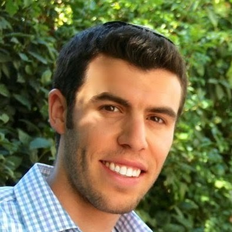
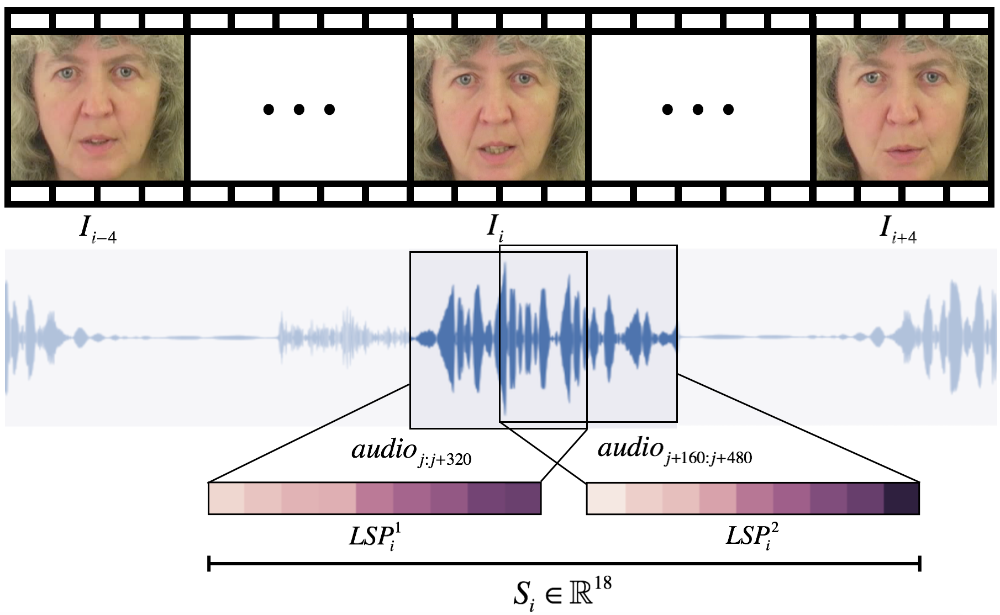
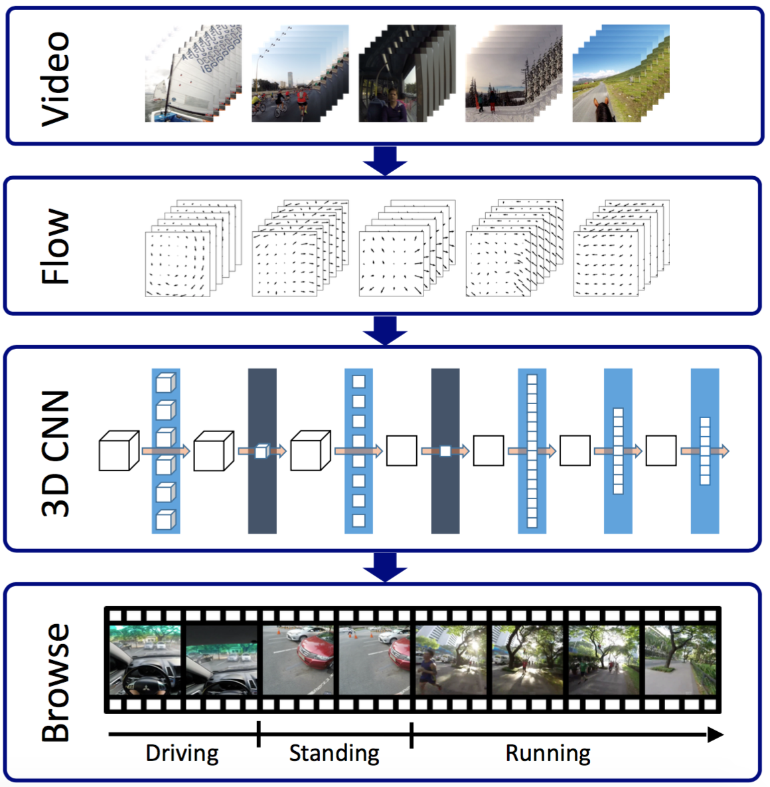

|  |
Ariel EphratSchool of Computer Science and Engineering, The Hebrew University of JerusalemOffice: B504 Email: arielephrat_at_cs.huji.ac.il |
- About Me
-
I am a second year PhD candidate working with Prof. Shmuel Peleg as part of the HUJI Computer Vision Lab. My main research interests are applications of Computer Vision using Deep Learning, particularly in area of cross-modal video analysis.
- Publications
-
 Vid2speech: Speech Reconstruction from Silent Video
A. Ephrat and S. Peleg
IEEE International Conference on Acoustics, Speech and Signal Processing (ICASSP), 2017
pdf | webpage | code Compact CNN for Indexing Egocentric Videos
Y. Poleg, A. Ephrat, C. Arora and S. Peleg
IEEE Winter Conference on Applications of Computer Vision (WACV), 2016
pdf | webpage
Automatic Liver Tumor Segmentation in Follow-Up CT Scans
R. Vivanti, A. Ephrat, L. Joskowicz, O.A. Karaaslan, N. Lev Cohain and J. Sosna
Proc. International Workshop on Patch-based Techniques in Medical Imaging, MICCAI, 2015
pdf
- Teaching
-
Hebrew University of Jerusalem — Teaching Assistant, Undergraduate Engineering Projects and Workshop, 2016/17
Hebrew University of Jerusalem — Teaching Assistant, Undergraduate Engineering Projects and Workshop, 2015/16
- Work
-
Google — Software Engineering Intern, 2016 Here a Story — Co-founder and Web Developer, 2013–2014